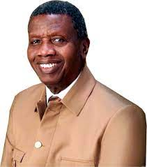
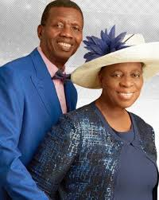
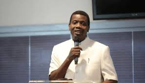

ENOCH ADEJARE ADEBOYE
His Life and Education
He was born on the second day of March in the year 1942 into a humble family in the village of Ifewara, Osun State, located in the South-Western part of Nigeria.
In 1956, he was admitted into one of Nigeria’s foremost Secondary Schools, Ilesha Grammar School, Osun State.
As a youth he discovered a passion for books, and an aptitude for science, and in particular, mathematics.
He obtained a Bachelors degree in Mathematics from the University of Ife, Nigeria in 1967,
a Masters degree in Hydrodynamics from the University of Lagos, Nigeria in 1969, and a Doctorate Degree in Applied Mathematics from the same university in 1975.
He had planned to become the youngest University President in Africa.
His Family

In 1967, he got married to his beloved wife, Foluke Adenike Adeboye (nee Adeyokunnu).
Enoch Adeboye has been married to Foluke Adenike Adeboye for over 45 years.
Together they have three sons and one daughter, and many grand and great grandchildren children.
They reside at the Redemption Camp in the suburbs of Lagos, Nigeria.
His Ministry

In an experience that could be described as his wake up call, his daughter became ill in 1973, and proved unresponsive to several bouts of orthodox medicine.
A cousin had invited him and his wife to a parish of RCCG to seek divine healing for their daughter.
On July 29, 1973, Enoch Adeboye made a personal commitment to Christ through the ministry of Reverend Josiah Olufemi Akindayomi, the founder and first general overseer of The Redeemed Christian Church of God.
Reverend Akindayomi was uneducated but was supernaturally endowed with the ability to read the Holy Bible in his native language.
He was ordained as a Pastor in RCCG in 1977, Pastor Adeboye received a solid foundation in the scriptures.
Pastor Adeboye manifested an incredible passion for the work of the Lord by pioneering Bible study meetings, crusades, revivals, outreaches and the evangelistic programs known as the Congress.
These were very successfully conducted in various cities all over South-West Nigeria.
In 1981, when the founder passed to glory, the baton of leadership was handed over to him by divine orchestration.
He conducts his ministry through the RCCG, including:
The monthly Holy Ghost Service (HGS) [open air meeting] in Nigeria with an average attendance of over 1 million people.
The annual March 3-Day Special Holy Ghost Service (SHGS) [open air meeting] in Nigeria with an average attendance of over 6 million people.
The annual December weeklong Holy Ghost Congress (HGC) [open air meeting] in Nigeria with an average attendance of over 12 million people.
The quarterly Festival of Life [indoor revival meeting] in London, UK and various cities in the US with an average attendance of over 50,000 people in the (UK) and 10,000 in the (US) respectively.
The annual RCCG Conventions in Nigeria, UK, Asia and the US with an average attendance of over 7 million (Nigeria), 50,000 (UK) and 10,000 (US)
The annual RCCG Leadership and Discipleship Conferences and Retreats all over the world.
Television programs are broadcast on a digital-cable channel called Open Heavens TV, Liveway TV and Satellite radio.
Enoch Adeboye has written over 60 books. His daily devotional manual (Open Heavens), with over 1 million published annually, available in English, French and other major languages of the world is globally-distributed and widely-read.
His Acheivements and Awards
His recognitions include the following:
Recognitions include the following: 1999 – Received honorary citizenship and key of Cambridge, Massachusetts, USA. 2000 – Dedicated the first chapel in the Nigerian Presidential Villa, Abuja, Nigeria. 2002 – Received the key to the city of Detroit, Michigan. 2005 – Received honorary citizenship and key of Dallas, Texas, USA. 2005 – Received honorary citizenship and key of Baltimore, Maryland, United States. 2008 – Awarded a National Honor (Order of the Federal Republic of Nigeria) by the Nigerian President. 2009 – Led the Pre-Summit Prayers at the 64th General Assembly of the United Nations Headquarters, New York. 2009 – Named one of The World’s Fifty Most Powerful People by Newsweek Magazine (USA). 2009 – Awarded honorary doctorate degree – University of Lagos, Lagos, Nigeria. 2009 – Awarded honorary doctorate degree – University of Nigeria, Nsukka, Nigeria. 2009 – Awarded honorary doctorate degree in Theology – Canada Christian College, Canada. 2010 – Awarded a National Sports Honor (Spiritual Pillar of Nigerian Sports). 2011 – Chaired United Nations Global Summit on the Road Map to a Culture of Peace in the Middle East. 2011 – Awarded honorary doctorate degree – University of Ibadan, Ibadan, Nigeria. 2011 – Received award as the Best/Most Profitable Icon/Personality in Nigeria 2014 – Awarded National Honour – (CON) Commander of the Order of the Niger 2015 – Awarded Honorary Doctor of Science – University of Lagos 2015 – Certificate of Recognition – The Congress of The United States of America 2015 – Presidential Merit Award – The Nigerian Society of Engineers
Though the above achievements are phenomenal, Enoch Adeboye never fails to give glory to God, claiming that there are greater things ahead that the Lord will yet do.
For more,Click here